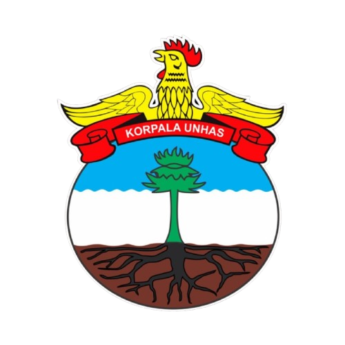

Gua-gua Indonesia menyimpan kekayaan alam, sejarah, dan ekosistem yang luar biasa. Melalui proyek pemetaan ini, Korpala Universitas Hasanuddin berupaya mendokumentasikan lokasi, karakteristik, dan potensi setiap gua secara akurat dan dapat diakses oleh publik.
Peta interaktif ini dibangun untuk mendukung kegiatan eksplorasi, penelitian, keselamatan perjalanan, serta pelestarian lingkungan karst di seluruh Nusantara. Dengan menggabungkan data lapangan, teknologi pemetaan, dan semangat kepencintaalaman, kami berharap platform ini menjadi sumber informasi terpercaya bagi penjelajah, peneliti, dan masyarakat yang ingin mengenal lebih jauh dunia bawah tanah Indonesia.
Eksplorasi yang bertanggung jawab adalah kunci. Mari bersama menjaga dan melestarikan warisan alam Indonesia.
| ID | Nama | Daerah | Jenis | Kedalaman (m) |
|---|---|---|---|---|